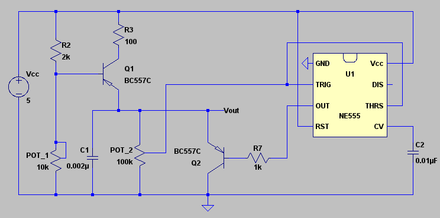
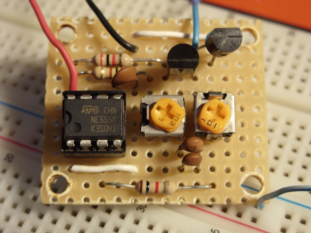
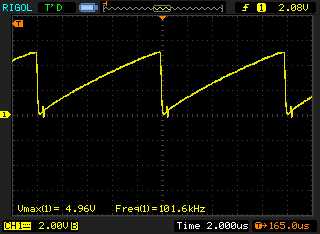
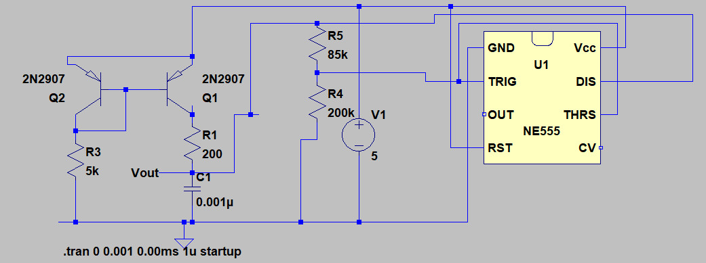
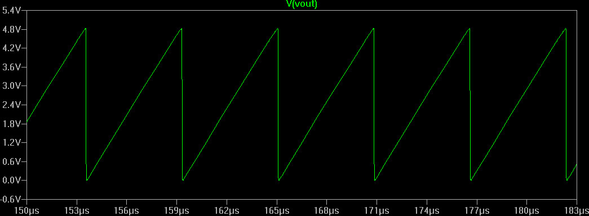

Back to works listing
Sawtooth Generator
A simple sawtooth generator based on Timer 555.
Version 1

Fig. 1 - LTSpice circuit diagram.


Fig. 2 - Assembled circuit and oscilloscope capture, the sawtooth ramp is slightly curved, due to the way capacitor is charged.
Version 2

Fig. 3 - Using a constant current source, its possible to charge the capacitor linearly.

Fig. 4 - LTSpice circuit simulation, ~170kHz wave.